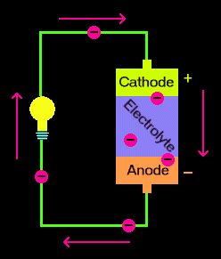

Computer Science and Engineering

Computer Science and Engineering (CSE) is an academic program at many universities which comprises scientific and engineering aspects of computing. It is offered in both Undergraduate as well Postgraduate with specializations. Undergraduate Courses usually include programming, algorithms and data structures, computer architecture, operating systems, computer networks, software engineering, database systems and so many courses.
Visit IUB
Electrical and Electronics Engineering

Electrical engineering is an engineering discipline concerned with the study, design, and application of equipment, devices, and systems which use electricity, electronics, and electromagnetism. It emerged as an identifiable occupation in the latter half of the 19th century after commercialization of the electric telegraph, the telephone, and electrical power generation, distribution, and use. Electricity has been a subject of scientific interest since at least the early-17th-century. William Gilbert was a prominent early electrical scientist, and was the first to draw a clear distinction between magnetism and static electricity. He is credited with establishing the term "electricity".
Pharmacy

Pharmacy is the clinical health science that links medical science with chemistry and it is charged with the discovery, production, disposal, safe and effective use, and control of medications and drugs. The practice of pharmacy requires excellent knowledge of drugs, their mechanism of action, side effects, interactions, mobility and toxicity. At the same time, it requires knowledge of treatment and understanding of the pathological process. Some specialties of pharmacists, such as that of clinical pharmacists, require other skills knowledge about the acquisition and evaluation of physical and laboratory data.